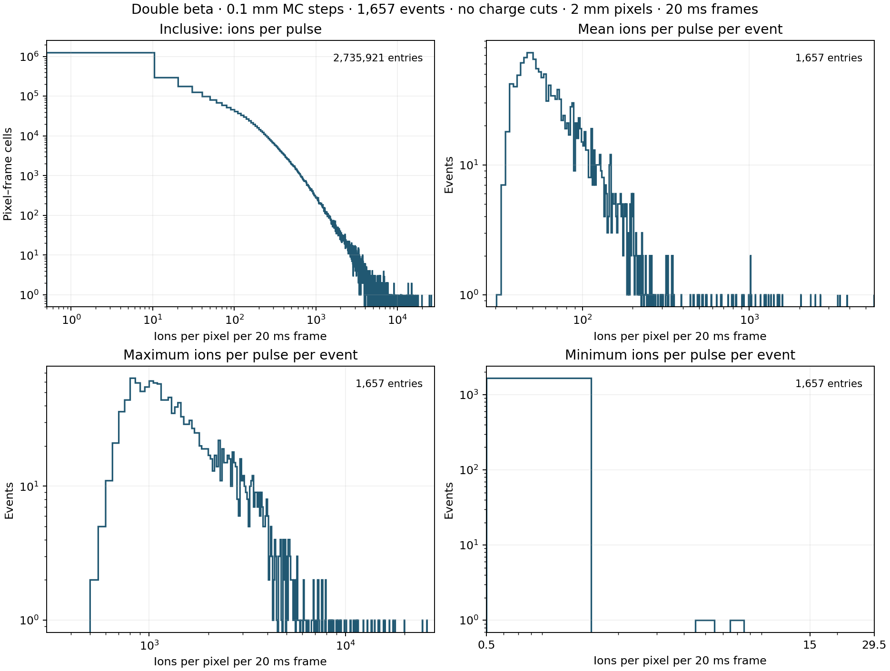
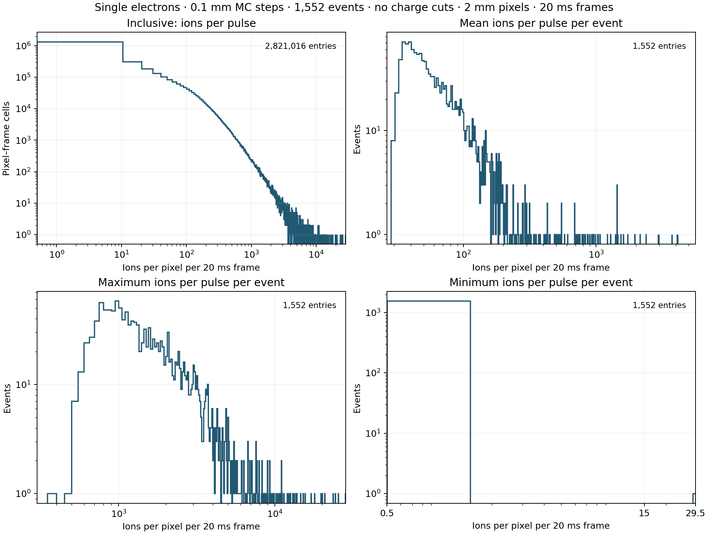

Pixel charge per electronics frame
Requested 8,000 catalogue events per species from the input samples; processed 1,657 double-beta and 1,552 electron events, limited by available input events. All events and all MC particles reach collection. MC generation step: 0.1 mm (simulation input). Random drift uniform in 10–150 cm; thermal isotropic Gaussian diffusion, 200 V/cm bulk field and 293.15 K; W = 21.9 eV. The diffusion histogram has 100 bins per axis and 3σ padding. Out-of-histogram ions are recorded. Ideal hole/pixel assignment maps each diffusion-bin centre to its containing 2 mm pixel. Frame width is 20 ms (2 mm slices at 0.1 m/s). Time is relative to the first arrival edge, increasing source z is later. Per-hit ion counts are rounded integers. Each event has an independent reproducible drift, diffusion and transverse grid phase. A pulse is a pixel–frame cell with positive ion count. Inclusive, event mean and event maximum include every pulse, with no charge threshold. Every event with pulses enters the minimum histogram, using its true minimum over all positive cells. All four distributions have no charge cut. The event mean is its total pulse-ion sum divided by its number of pulses. Events without pulses have no distribution entries. The statistics table uses the same event populations as each histogram. An empty minimum distribution has unavailable mean/median. All histogram count and ion axes are logarithmic; bins are shared between species. Track-reconstruction decisions do not gate this study. No time-integrated pixel charge is used in these plots. Ion retention is all collected pixel ions divided by produced event ions, before histogram truncation. The aggregate ratio uses sums over events; event mean and median give every event equal weight. Loss is one minus retention, caused here only by diffusion-histogram truncation. The minimum histogram selection introduces no collection or threshold loss. Produced ions use the saved per-hit rounded counts. Diffused ion clouds are saved independently of the collection grid when a cache is enabled. Pixel pitch and frame duration can change without repeating Gaussian draws; changing transport or diffusion-histogram settings selects a different cache. Run times include first-event compilation; initial Julia process startup and final histogram/presentation generation are separate.
| Species | Events | Events with charge | Pixel–frame cells with charge | Collected ions | Outside diffusion histogram |
|---|
| Double beta | 1657 | 1657 | 2,735,921 | 185,930,020 | 27,469 |
| Single electrons | 1552 | 1552 | 2,821,016 | 173,632,571 | 21,758 |
Ion retention and losses
| Species | Pixels included | Aggregate retention [%] | Mean event retention [%] | Median event retention [%] | Aggregate loss [%] |
|---|
| Double beta | All pixels | 99.9852 | 99.9852 | 99.9857 | 0.0148 |
| Single electrons | All pixels | 99.9875 | 99.9875 | 99.9883 | 0.0125 |
| Species | Outside histogram [ions] | Histogram loss [%] |
|---|
| Double beta | 27,469 | 0.0148 |
| Single electrons | 21,758 | 0.0125 |
Distribution means and medians
| Species | Distribution | Events | Mean [ions/pulse] | Median [ions/pulse] |
|---|
| Double beta | Maximum | 1657 | 2192.87 | 1534.00 |
| Double beta | Minimum | 1657 | 1.01 | 1.00 |
| Double beta | Event mean | 1657 | 119.05 | 67.68 |
| Single electrons | Maximum | 1552 | 2326.86 | 1594.00 |
| Single electrons | Minimum | 1552 | 1.02 | 1.00 |
| Single electrons | Event mean | 1552 | 123.86 | 62.81 |
Run time
| Species | Source read [s] | Diffusion [s] | Cache read [s] | Cache write [s] | Collection/reduction [s] | Total [s] |
|---|
| Double beta | 3.199 | 12.569 | 0.000 | 0.000 | 15.154 | 32.369 |
| Single electrons | 2.720 | 11.012 | 0.000 | 0.000 | 10.965 | 25.131 |
Double beta

Single electrons

Numerical inputs
- /Users/jjgomezcadenas/Projects/NAUSICAA/events/0nubb_100um_hitdf.h5
SHA-256: ab0339001cd307a7687db3abf15ea5e813b5adcf1efc3c001e2b3defb9be6b8b - /Users/jjgomezcadenas/Projects/NAUSICAA/events/electron_100um_hitdf.h5
SHA-256: 51c3a12c16e487e9c70d44be05b3fb0b8b50aaf69fe7b1572430918376d94b43